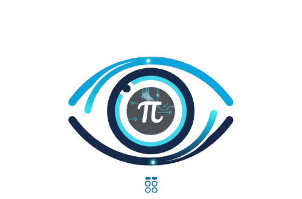

La propuesta destaca por tener un coste inicial residual. Todo el software implementado es Open Source (licencia de uso 0€), por lo que el presupuesto se destina íntegramente al servidor físico ARM.
| Componente | Descripción Técnica | Costo (€) |
|---|---|---|
| Raspberry Pi 4 Model B (4GB RAM) | Cerebro del sistema y motor Docker | 70 € |
| Fuente de alimentación USB-C 15W | Alimentación oficial y estable 24/7 | 20 € |
| Tarjeta microSDXC (32GB) Class 10 | Almacenamiento del OS y configuraciones YAML | 12 € |
| Cableado UTP y disipadores pasivos | Conectividad LAN y gestión térmica | 15 € |
| Costo Total de Despliegue | 117 € | |
Comparado con licencias corporativas que rondan los 1.500€ anuales más el hardware, esta solución se amortiza en la primera semana de funcionamiento, asegurando la continuidad del negocio de Chitech sin impacto en su tesorería.